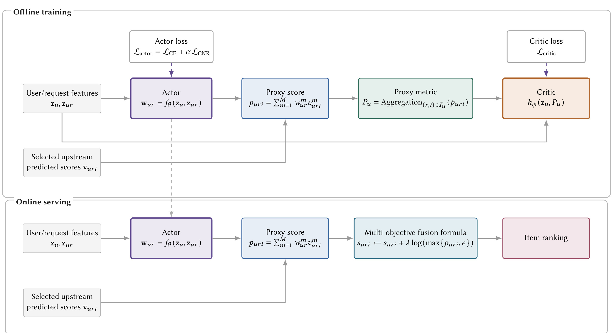
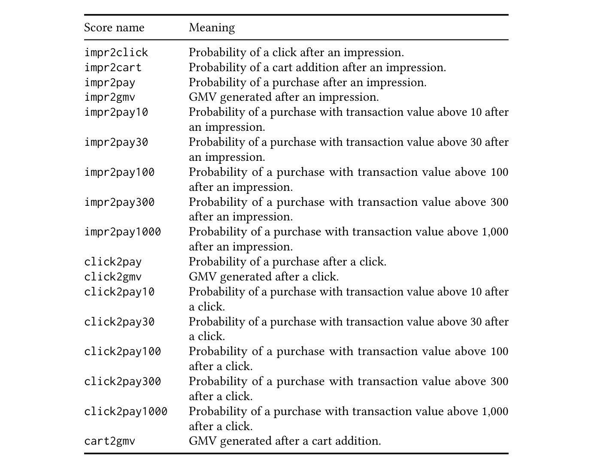
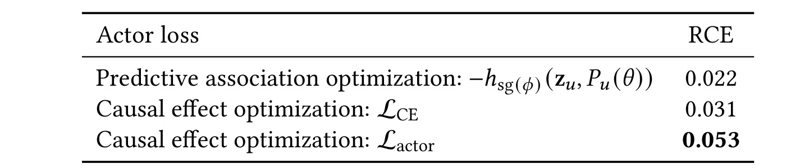
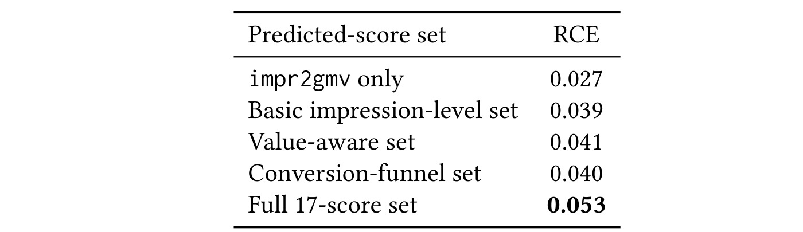
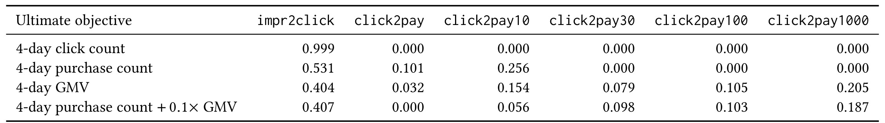
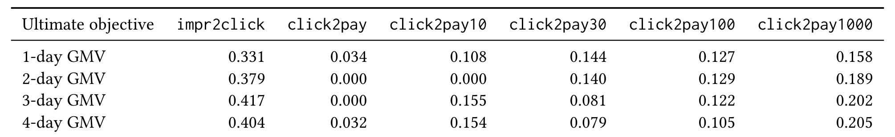

DCEO：面向电商搜索长期用户价值建模的直接因果效应优化
机构：阿里巴巴淘天集团
作者：Junzhao Zhang、Tao Zhang、Liren Yu、Feiyi Dong、Zhixuan Zhang、Dan Ou、Haihong Tang
公开时间：2026 年 8 月 26 日
论文链接：arXiv:2608.25635
公开资源：截至本次调研，未核验到作者公开的代码、数据或项目页。
1. 背景和问题
电商搜索排序有一个长期存在的粒度错位：系统在一次请求里必须比较一批商品，并在毫秒级决定谁获得曝光；业务真正关心的却往往是用户随后数日的购买、成交金额或复合价值。这些长期目标只有把同一用户跨请求、跨商品的行为聚合之后才有意义，无法直接给某一次曝光中的每个商品提供即时监督。工业系统于是通常先训练点击率、购买率、客单价、成交额等上游模型，再由人工维护的全局融合公式把多个分数压成一个排序分数。这样的方案工程上稳定，却把“长期目标是什么”“当前用户更受哪类信号影响”和“代理分数提高后长期结果是否真的会提高”三个不同问题揉在了一起。
传统融合最直接的困难是权重共享。一个处在探索阶段、购买意图尚不明确的用户，可能需要点击信号帮助系统发现兴趣；一个已经表现出明确购买意向的用户，则更依赖购买概率和价值门槛信号。若所有用户、所有请求都共用一套手调权重，排序器只能表达总体平均偏好。运营人员即使通过反复线上实验找到了更好的全局组合，也很难覆盖意图、价格敏感性和生命周期差异，而且每次增加上游目标都要重新协调量纲、权重和业务风险。DCEO 的第一步不是废弃现有融合，而是学习一个随用户与请求变化的“新代理分数”，再把它作为附加项接入既有公式，因此目标是以尽量小的服务改造获得个性化代理。
更根本的问题是相关性不等于可优化性。日志中代理指标较高的用户可能本来就有更强购买意图，因而长期成交额也高；这只能说明二者共同变化，不能推出排序器把代理指标提高 5% 后成交额会跟着提高。若直接训练网络用代理指标预测长期目标，模型容易把用户固有消费能力、历史活跃度或流量规模编码进预测；actor 随后追逐的是“谁的长期价值高”，而不是“对同一个用户实施一个相对代理干预会怎样”。这一区分对排序尤其关键，因为可控变量并不是用户身份或自然需求，而是排序动作造成的商品级代理分数组合。
论文要解决的红色问题是：电商搜索真正要优化的长期购买或成交额定义在用户层，而排序只能在单次请求中给商品打分；手工融合既缺少请求级个性化，又主要依赖代理与结果的相关性，无法保证排序器主动提高代理指标会带来长期用户价值提升。
DCEO 因此把问题拆成 actor、聚合校准和 critic 三层。actor 读取用户与请求特征，为多个已存在的上游预测分数产生非负且和为一的权重，从而构造商品级代理；聚合模块把一个参考日内同一用户的商品级代理汇总成用户级指标，并用固定曝光数口径削弱不同活跃度带来的规模混杂；critic 学习在用户条件下，长期目标随这一聚合指标怎样变化。训练 actor 时，不奖励 critic 对当前水平的预测值，而奖励 critic 在当前指标与其相对增加量之间的预测差。这使“选择高价值用户”和“对同一用户提高可控代理”在优化目标上得到显式区分。
论文的价值还在于把长期优化和已有工业排序栈接起来。它没有声称从观测日志中恢复无条件成立的真实因果效应，而是定义了固定参考曝光数、局部相对干预和条件 critic 下的可操作指标。离线阶段可以使用用户级数日标签和多个辅助网络，线上阶段只保留 actor 与一次加权求和，额外代理通过一个强度系数加入旧融合分数。这样的设计牺牲了一部分表达自由度，却换来分数范围受控、权重可解释、服务成本低以及逐步上线的可能性。
理解结果时需要预先守住三条边界。其一，critic 的差分仍来自观测数据；若用户条件没有覆盖关键混杂因素，或当前代理附近缺少足够支持样本，所谓相对因果效应可能只是模型外推。其二，固定曝光校准有意切断“排序改善使用户更活跃、获得更多曝光”这条路径，所以离线指标只衡量参考曝光量下代理质量的变化，不等于完整部署总效应。其三，actor 只能在既有上游分数的凸组合中搜索；输入模型没有表达出的长期价值信号，DCEO 本身无法凭空补足。后续实验应分别检查局部目标、权重结构、消融和真实线上增量，不能用单一数字代替整条证据链。
2. 方法
2.1 跨粒度建模与 RCE
论文先把商品级可控量提升到用户级。对每个用户，取参考日内所有搜索曝光作为集合；每次曝光的商品代理由 actor 给出，然后在用户维度聚合为代理指标，长期标签则取参考日之后若干天的累计点击、购买或成交额。为了比较不同量纲目标，作者不使用长期结果的绝对增量，而定义代理指标相对增加 δ 时、用户长期目标预测增量相对于当前长期目标的总体比例。核心机制不是最大化当前代理水平，而是最大化同一用户局部干预前后的结果差。
符号解释：u 表示用户，P_u 是参考曝光口径下聚合得到的用户级代理指标，Y_u(P) 表示用户条件固定时代理处于 P 水平对应的长期目标，δ 是局部相对干预幅度，论文实验取 0.05；分子对所有用户的干预前后差求期望，分母用当前长期目标总体均值做尺度归一。该量回答的是“把可控代理相对提高一点会怎样”，不是“代理高的用户是否更值钱”，也不是单个用户级因果效应的无偏证明。
2.2 Actor 代理分数与曝光校准
actor 接收用户特征与请求特征，为 M 个上游预测分数生成请求级权重。Softmax 式约束保证权重非负且总和为一，商品代理因此落在上游分数的凸包内；这既避免新分数无界漂移，也使平均权重和请求间标准差可以直接解释。随后，商品代理先按用户当天的所有曝光求平均，再由校准网络换算到固定参考曝光数 C 的口径。校准比值的梯度被截断，意味着它负责统一活跃度尺度，而不会成为 actor 通过改变分母走捷径的通道。
符号解释：r 是用户的一次搜索请求，z_u 与 z_ur 分别是用户级和请求级特征，f_θ 是 actor，w_ur 是该请求上的 M 维权重向量，w_ur^m 对应第 m 个上游预测分数。约束把权重限制为概率单纯形，因此模型可以按请求重排信号重要性，但不能通过任意负权重或无限放大某一维制造难以控制的新尺度。
符号解释：i 表示请求 r 中获得曝光的商品，v_uri^m 是第 m 个上游模型对该商品给出的预测分数，p_uri 是 DCEO 新构造的商品级代理。权重在请求内共享而商品分数各异，所以 actor 学的是当前请求应更重视点击、购买还是价值门槛，上游模型仍负责区分同一请求里的商品，这种分工让线上新增计算保持为一次小网络推理和加权求和。
符号解释：I_u 是用户在参考日内全部曝光商品的索引集合，N_u 是曝光数量，P_u^raw 是商品代理的用户级原始均值。平均而非求和可以先消除曝光规模的一阶影响，但不同曝光数量下均值的统计含义仍可能不同，例如高活跃用户的曝光组成更丰富，因此论文继续引入条件校准，而不是把这个原始均值直接交给 critic。
符号解释：g_ψ 根据用户特征和给定曝光数估计代理指标的条件尺度，C 是统一参考曝光数，实验设为 100，N_u 是实际曝光数，ε_g 防止分母过小，sg 表示停止梯度。这个比值把不同用户的观测代理换算到同一曝光口径；它减少活跃度混杂，却也明确排除了“模型改变用户未来活跃度”所产生的总量路径，因而需要和线上实验分开解释。
2.3 Critic 因果损失与条件排序正则
critic h_φ 读取用户特征和停止梯度后的 P_u，用均方误差拟合数日长期标签 Y_u。actor 更新时固定 critic 参数，并比较 P_u 与 (1+δ)P_u 两点的预测差；作者直接最小化差分的负值，而没有把每个样本除以当前预测，因为用户级标签可能稀疏、分母接近零会引入不稳定梯度。仅靠局部差分仍可能难优化，所以论文增加条件归一化排序正则：先用辅助网络估计给定用户特征下 P 和 Y 的均值、方差，再对残差化后的有序样本对使用 Bradley–Terry 损失，鼓励代理相对更高的样本也有更高长期目标。
符号解释：h_φ 是 critic，输入用户特征 z_u 与聚合代理 P_u，Y_u 是观测到的长期标签。对 P_u 停止梯度让这一阶段只拟合 critic，而不让 actor 通过改变输入同时追逐回归误差；critic 学到的是条件响应面近似，能否把局部差分解释为因果效应仍依赖条件特征充分性、局部支持和模型拟合质量。
符号解释：L_CE 是 actor 的直接效应损失，critic 参数 φ 在 actor 更新时冻结，负号把最大化局部预测增量转成最小化目标。两个预测共享同一用户特征，只改变代理水平，因此比最大化 h_φ(z_u,P_u) 更不容易把高消费能力用户的基线值当成可控收益；不过若 (1+δ)P_u 超出该用户日志的支持区域，差分依然可能成为不可靠外推。
符号解释：P̃ 与 Ỹ 分别是按用户条件均值和标准差归一后的代理残差、长期目标残差，O 是满足 Ỹ_a 大于 Ỹ_b 的有序样本对，σ 是逻辑函数。条件归一化的目的，是尽量不让用户天然价值和标签尺度支配跨样本排序；损失只要求代理残差顺序与长期结果残差顺序一致，为局部 critic 差分提供更平滑的训练信号，但它本身仍是关联性正则而不是额外的因果识别。
符号解释：L_actor 是最终用于更新 actor 的目标，L_CE 聚焦局部干预前后的 critic 差值，L_CNR 稳定用户条件下的相对排序，α 控制二者权衡，实验默认 0.3。消融显示过小正则没有充分利用排序信号，过大正则又会让关联目标盖过直接效应目标，因此 α 不是纯粹工程常数，而决定优化究竟更接近局部变化还是条件相关排序。
2.4 联合训练与在线服务
离线训练同时维护 actor、曝光校准器、critic 和条件归一化网络，但它们职责分离：校准器统一用户级代理口径，critic 拟合长期响应面，归一化网络提供条件残差尺度，actor 才是最终要部署的部分。训练时使用用户级长期反馈，服务时仍回到商品级打分。线上为每个请求产生权重，得到商品代理 p，再以强度 λ 作为新项加入原有多目标融合分数；其余辅助网络全部移除，所以论文报告的工程收益不是重建排序器，而是给旧公式增加一个长期目标对齐的可控方向。
符号解释：s_uri 是系统原有的商品融合分数，p_uri 是 actor 构造的新代理，λ 是上线时控制新代理影响强度的系数，ε 避免代理接近零时对数发散。对数变换与既有概率型目标的融合形式兼容，λ 则提供灰度和风险控制旋钮；线上效果同时取决于 actor 学到的方向与 λ 的选择，因此离线 RCE 不能单独预测最终增量大小。

图中上半部分揭示了跨粒度学习的完整闭环：用户与请求特征进入 actor，17 个上游分数经过请求级权重组合成商品代理，随后跨用户曝光聚合并校准为 P_u，critic 再用用户级长期标签评估局部代理干预；actor 损失来自 critic 差分与条件排序正则，critic 自身则由回归损失训练。虚线清楚区分参数更新关系，避免把 critic 误解为在线重排器。下半部分只保留 actor、代理求和和旧融合公式，说明部署没有用户级聚合，也不需要等待数日标签。这个训练—服务分割是方案可落地的关键，同时也提示评估边界：线上每个商品的改变经由整页竞争、后续请求和用户反馈形成总效果，而离线 critic 只建模固定参考曝光口径的局部 P_u 变化；二者方向一致可以增强证据，但不能把离线 0.053 直接换算成线上百分比。
3. 实验结果
3.1 数据、上游分数与评估口径
实验来自同一个工业电商搜索系统：连续 14 天日志用于训练，紧随其后的 1 天用于评估；长期标签从参考日向后累计，默认目标是 4 日成交额。上游共有 17 个已上线预测分数，覆盖曝光后点击、加购、购买、成交额以及从点击到购买的不同价值门槛概率；分数经过变换落在零到一之间，均值被调到接近 0.1，以降低量纲差异对凸组合的影响。四个学习组件都使用多层感知机，曝光参考数 C=100，局部相对干预 δ=0.05，条件排序正则权重 α=0.3。离线主指标 RCE 由固定 critic 在评估集上计算，考察 actor 使用户级代理相对提高 5% 时的平均长期目标预测差。

这张表决定了 DCEO 能“发现”什么，而不仅是实验设置清单。曝光到点击、购买和成交额的分数描述漏斗不同阶段；购买与点击后购买又按交易金额大于 10、30、100、300、1000 切成多组门槛，使 actor 能区分广泛低价值转化和稀疏高价值转化。最后还有加购后成交额信号。把这些信号限制在同一数值范围后，平均权重才具有可比较的业务含义。与此同时，这个输入空间也暴露了方法上限：若长期价值依赖复购、退货、履约体验或用户留存，而 17 个分数都未编码相关信息，凸组合无论怎样优化都无法显式表示这些路径。因此 Table 5 的分数集消融应理解为“现有预测资产是否互补”，而不是 DCEO 已覆盖长期用户价值的全部决定因素。
评估设计的优点是训练窗口、目标窗口和相对干预都写得较清楚，且后续还有 41 天随机线上实验补充端到端证据。但离线部分仍缺少若干复现所需细节：用户和曝光规模、特征列表、样本对采样方式、网络宽度、优化器、训练方差及置信区间没有完整公开。RCE 还是同类 critic 上的模型指标，不是随机对照下直接观察到的 5% 代理干预效应；它适合比较 actor 版本，却不足以单独声称效应估计经过校准。
3.2 最终模型的权重结构
默认 4 日成交额目标下，完整 actor 的离线 RCE 为 0.053。作者展示了六个代表性分数的权重均值与标准差：曝光到点击均值 0.404，是最大的单一分量；点击后购买且价值超过 1000 的均值 0.205，其次是超过 10 的 0.154、超过 100 的 0.105、超过 30 的 0.079，曝光到购买均值只有 0.032。这说明长期成交额代理并没有退化成即时点击，也不是简单复制一个购买率，而是用点击提供广覆盖兴趣信号，再用多档价值门槛修正后续收益。
表中第二行比第一行更能检验“个性化”是否真实发生。六个代表分数的标准差分别为 0.115、0.096、0.057、0.046、0.049 和 0.067，全部非零；特别是平均权重很小的曝光到购买，其标准差反而达到 0.096，意味着它在总体上不是主导信号，却可能在特定用户或请求上被显著放大。曝光到点击的 0.404±0.115 表明系统仍依赖稠密反馈稳定排序，但权重并非全局常数。需要注意，论文只给边际均值和标准差，没有展示权重与用户意图、价格区间或生命周期的条件关系，也没有给相关矩阵；因此我们可以确认请求间存在变化，却不能仅凭这张表判断变化是否符合业务直觉、是否集中在少数异常请求，或是否造成特定群体的曝光偏差。
权重和为一还带来一个重要解释：某一信号变大必然挤压其他信号，所以均值不是各目标的独立边际贡献。高点击权重可能既代表点击本身对未来成交有帮助，也可能反映点击模型提供了更好的商品区分度。要区分两者，需要固定上游模型质量做替换实验，或在不同校准质量、不同流量人群上报告权重稳定性。当前结果更适合证明 DCEO 学出了非平凡组合，而不是为每个分数赋予因果贡献。
3.3 直接效应优化与预测相关的差别
最关键的对比把三种 actor 目标放在相同评估口径下：直接最大化 critic 当前预测值的“预测关联优化”得到 0.022；只使用局部因果差分损失 L_CE 得到 0.031；完整的 L_CE 加条件排序正则得到 0.053。完整目标相对预测关联基线约为 2.41 倍，说明从“挑选预测值高的状态”切换为“提高同一用户代理后的预测差”确实改变了 actor 找到的方向，而条件排序正则又缓解了纯差分训练不稳定。

三行结果对应三层论证。第一行并非弱模型，而是一个容易混淆的目标：最大化 h(z,P) 会同时偏好高基线用户和高 P 区域，actor 可能把不可控用户价值当成收益，所以 RCE 只有 0.022。第二行把用户特征固定、只比较 P 与 1.05P，RCE 升至 0.031，支持“优化变化而非水平”的主张。第三行加入条件残差排序后升至 0.053，表明局部 critic 差分需要额外的平滑监督。可是这仍是同一 critic 定义下的离线比较，完整目标在训练和评估中共享建模假设，可能存在一定指标同源优势。更强验证应使用独立结构的 effect evaluator、分折训练的 critic，或在线随机改变代理强度 λ，直接检验预测的局部增益排序。
从绝对值看，0.053 不是线上成交额提升 5.3%。它表示在论文规定的归一化方式下，critic 对相对干预的总体预测差与当前长期目标均值之比。线上排序还受候选集合、旧融合分数、λ、竞争商品和用户后续活动影响。论文随后报告的线上 GMV 增量是 0.36%，数量级显著不同，正好说明 RCE 的角色是离线选择指标，不是业务提升率的直接估计器。
3.4 损失与输入分数消融
损失消融进一步拆开两项监督。单用 L_CE 的 RCE 是 0.031，单用 L_CNR 是 0.048；组合时 α=0.1 得到 0.052，α=0.3 达到最好 0.053，α=1.0 反而下降到 0.047。条件排序单独就很强，说明用户条件归一化后的关联顺序提供了稳定而有信息量的训练信号；但最优结果仍需要局部差分约束。α 太大后跌到低于纯 CNR 的水平，提示两项目标不是完全一致，过度强调排序会削弱对直接变化方向的约束。
这张表不应被简化为“0.3 是通用最佳超参”。差分损失依赖 critic 局部斜率，排序损失依赖条件均值和方差估计以及样本对分布，两者的梯度尺度会随数据稀疏度、长期窗口和网络校准改变。α=0.3 只在当前工业数据、当前归一化和 4 日成交额目标上最优。更值得关注的是非单调形状：从纯 L_CE 到加入 0.1、0.3 正则持续上升，说明稳定排序帮助 actor 跨过差分目标的噪声；升到 1.0 后下降，说明关联正则过强会重新引入论文最初想避免的目标偏移。若部署到新市场，应该重新画出 α—离线 RCE—线上增量三者曲线，并同时检查权重熵和人群分布，而不是照搬单点。
输入分数消融回答另一类问题：只使用曝光后成交额分数时 RCE 为 0.027；基础曝光级集合为 0.039；加入价值感知门槛后为 0.041；只强调转化漏斗组合为 0.040；全部 17 个分数达到 0.053。单一“最接近目标”的成交额代理反而最弱，说明一个模型对未来 GMV 的点预测不足以概括排序可干预方向。点击、购买阶段与不同价格门槛提供了互补的密集度和价值结构，全量组合才让 actor 对不同请求选择不同折中。

表中从 0.027 到 0.053 的提升几乎翻倍，支撑多信号代理的必要性；但基础集合、价值感知集合和转化漏斗集合只相差 0.001—0.002，若没有多次运行方差或显著性检验，不能断言这几个中间方案有稳定排序。全量集合的优势可能来自信号覆盖，也可能来自维度更多带来的表达容量。更严谨的消融应控制维度数量，随机抽取同规模分数组合，报告多随机种子和按人群分层的 RCE；还应比较增加原始特征的自由网络，判断凸组合约束的稳定性收益是否抵消表达力损失。当前证据最稳妥的结论是：仅靠单一 GMV 代理明显不足，而 17 个既有分数的联合空间在该系统中提供了更好的可优化方向。若资源受限需要精简输入，论文现有数字还不足以确定应删除哪一组，应该用边际剔除消融而不是只比较预设集合。
3.5 目标类型与时间窗口的适应性
论文把最终目标从 4 日点击、4 日购买、4 日成交额换成购买与成交额复合目标，并观察 actor 权重。点击目标几乎把全部质量压到曝光后点击，权重 0.999；购买目标同时分给曝光后点击 0.531、点击后购买 0.101 和低门槛点击后购买 0.256；成交额目标的点击权重降为 0.404，同时更广泛地使用 10、30、100、1000 多档价值门槛；复合目标又形成不同组合。这种随目标语义变化的结构，比只报告一个最终 RCE 更能说明 actor 没有学成固定融合模板。

点击目标的 0.999 是一项有用的“正对照”：当终极目标本身就是点击，actor 几乎恢复最直接的点击分数，符合语义预期。目标改为购买后，曝光到点击仍占 0.531，说明稠密的兴趣信号对购买排序有基础作用，但点击后购买与低价值门槛开始分担权重。目标改为成交额后，高价值门槛信号扩张，尤其 click2pay1000 达到 0.205，体现对尾部高价值交易的重视。复合目标没有简单等于购买行和成交额行的线性平均，说明 critic 响应面与凸组合竞争共同影响结果。表中只展示六个代表分数，未列权重不能当作严格的零；因此这些模式提供可解释一致性，却不是完整归因。
随后只改变成交额累计窗口：1、2、3、4 日目标下，曝光到点击权重依次为 0.331、0.379、0.417、0.404；click2pay1000 从 0.158、0.189、0.202 到 0.205，总体随窗口延长上升；低门槛 click2pay10 也从 0.108 增至 0.154。结果表明更长窗口会改变探索信号与高价值信号的折中，但变化并非所有维度单调，例如 click2pay30 在 1 日为 0.144，之后为 0.140、0.081、0.079。

这张表展示了“长期”并不是一个二元标签，而是由时间窗口具体定义。click2pay1000 随窗口变长稳步增加，可能意味着高价值购买需要更长转化延迟；曝光到点击先升后略降，说明稠密兴趣信号在中期仍重要，但不是简单地窗口越长越依赖点击。click2pay30 明显下降，则提示短期内中低价值购买的预测贡献更直接。由于不同窗口标签高度重叠，权重变化也会受到标签规模、方差和 critic 校准影响，不能全部解释为用户行为机制。后续最好报告每个窗口的 RCE、线上延迟收益和 bootstrap 区间，并把同一用户的多窗口预测做联合分析，以区分真实时间结构与训练噪声。
目标适应性实验整体证明 DCEO 的权重会响应目标定义，符合其“自动代理设计”定位；但目标最长只有 4 日，尚未覆盖周、月级复购、退货和留存。随着窗口延长，标签延迟、策略漂移和曝光后的中介路径都会增加，固定参考日的单步代理干预可能不再足够。把方法称为长期价值建模时，应理解为相对即时点击更长期的数日指标，而不是已经解决完整用户生命周期优化。
3.6 41 天线上 A/B 实验
线上实验持续 41 天，对照为传统成交额代理，即点击率、转化率与购买条件下价值估计的乘积；实验组以相同接入框架加入 DCEO 学到的代理，并保持线上只执行 actor。结果是点击数提升 0.36%，购买数提升 0.12%，成交额提升 0.36%。三项指标同向，说明新代理没有用牺牲点击或购买数量换取少数高价交易，也为离线 RCE 的方向提供了端到端随机流量证据。
线上表格是整篇论文最强的业务证据。41 天覆盖多个周周期，比短期实验更能降低偶然日波动；成交额相对传统 GMV 代理提升 0.36%，直接对应论文希望优化的终极目标，点击也提升 0.36%，购买提升 0.12%，说明多阶段信号组合可能同时改善相关性与商品匹配。不过论文没有在表中给出流量规模、标准误、置信区间、显著性、分桶稳定性、用户留存或退货履约指标，也没有公布 λ 的具体选择和调参过程。因而这些百分比可以作为一个工业系统中的成功实例，却不能据此推断在其他市场必然复现，也不能判断 0.12% 的购买增量是否统计显著。
离线与线上证据应这样拼接：离线三组目标对比说明直接差分目标优于预测关联，损失与分数集消融解释收益来自哪里，权重表检查 actor 是否真正随目标和请求变化，线上随机实验最后验证整个排序闭环的净方向。它们不能互相替代。线上实验验证的是“DCEO actor 加上既定 λ 后整体有效”，并没有随机实施恰好 5% 的 P_u 干预，所以不验证 RCE 数值本身；反过来，RCE 也不能说明线上效果全由 critic 识别的直接路径造成。若要闭合因果论证，最有价值的追加实验是随机化多个 λ 档位，测量代理变化、长期目标变化和 critic 预测之间的剂量—反应关系。
4. 总结
DCEO 的核心贡献，是把长期用户价值代理的设计从“人工挑一个分数并调全局权重”改成“在请求级生成多目标凸组合，并以用户级局部结果差训练”。actor 负责从已有上游预测中构造可部署的商品代理；曝光校准把不同活跃用户转换到固定参考口径；critic 在用户条件下拟合代理与长期结果的响应面；直接效应损失比较同一用户当前代理和相对增加后的预测差，条件排序正则则提供更稳定的残差信号。最终只有 actor 上线，新代理作为附加项进入旧融合公式，因而方法兼顾了长期监督、解释性和服务成本。
实验证据形成了较完整但仍有限的链条：完整目标的离线 RCE 为 0.053，高于直接效应损失的 0.031 和预测关联目标的 0.022；全 17 分数集合优于单一成交额代理；权重随点击、购买、成交额目标以及 1—4 日窗口发生符合直觉的迁移；41 天线上实验相对传统成交额代理带来点击 +0.36%、购买 +0.12%、成交额 +0.36%。这些结果支持 DCEO 在该工业系统中是有效的自动代理设计方法，但 0.053 与 0.36% 属于不同口径，前者是 critic 定义的离线局部指标，后者才是特定上线配置的端到端业务增量。
主要局限至少有五项。第一，观测日志上的 critic 差分要获得因果含义，依赖关键混杂已被用户特征覆盖、P 与 1.05P 附近有支持样本、响应面拟合准确等强假设，论文没有给敏感性分析。第二，固定曝光数校准主动排除了用户活跃度和曝光量路径，离线 RCE 不是完整部署总效应。第三，actor 受限于 17 个上游分数的凸组合，稳定且可解释，但无法表达缺失信号、负向交互和更复杂的跨商品效应。第四，验证来自单一电商搜索系统，长期窗口最多 4 日，外部市场、周月级复购和策略漂移尚未覆盖。第五，线上表格缺少样本量、置信区间、显著性、人群分层与退货履约等护栏指标；请求级权重还可能改变不同价格带或用户群体的曝光公平性。
下一步最值得跟进四条路线。其一，随机化多个线上 λ 档位，并记录实际代理变化，直接画出 critic 预测、P_u 改变量与长期成交额的剂量—反应曲线，检验 RCE 的数值校准。其二，采用交叉拟合、独立 evaluator、重叠度诊断和未观测混杂敏感性分析，区分真实局部效应与 critic 外推。其三，把目标扩展到 7 日、30 日复购、退款和留存，并用序列决策或多时点中介建模处理活跃度路径。其四，对权重按新老用户、意图、价格带和流量场景分层，联合检查收益、稳定性、权重熵及曝光公平性；同时公开匿名化基准或最小实现，降低工业结论难以复现的问题。
总体而言，这篇论文最有启发的不是又增加一个多目标加权网络，而是把“相关于长期价值的代理”和“排序器提高后会改善长期价值的代理”明确分开，并通过训练—服务分割把用户级长期监督压回商品级在线动作。它提供了一个务实的工业折中：不声称解决所有因果识别问题，却把局部干预思路嵌入现有排序公式。真正决定其能否推广的，将是 critic 假设在新流量上的稳健性、上游分数覆盖度以及离线 RCE 与线上剂量反应的一致程度。